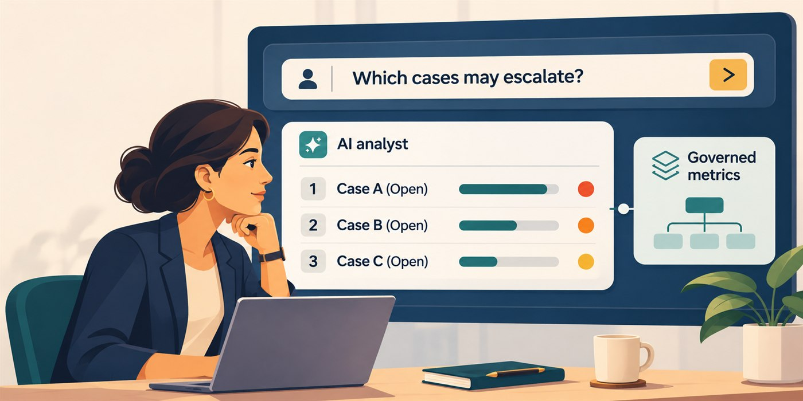

06 — AI PRODUCT CASE STUDY
Conversational Data Agents
Built AI data agents that let support leaders, managers, and account engineers ask questions in plain language and get answers from a governed analytics model. The agents also guide users through recurring workflows such as portfolio reviews and re-escalation analysis.

THE CONTEXT
It All Started When...
The data already existed, but finding the right dashboard was only part of the job. A user also had to know which customer group, date field, and metric definition applied. Routine questions often went back to analysts, and different filters could produce different answers to the same question.
PRODUCT OWNERSHIP
Harpreet's Role
- Worked with leaders, managers, and account engineers to prioritize questions and repeatable analyses. Designed a general-purpose agent and a specialist agent for support workflows.
- Translated analyst knowledge into rules for metric definitions, date alignment, customer scope, and the use of official measures. Required answers to state their scope and show the basis for any score.
- Designed reusable workflow skills and owned onboarding, starter prompts, and the feedback loop. Delivered the agents as versioned configurations in an existing AI assistant.
WHAT CHANGED
Results
- Made governed measures accessible through plain-language questions, using each caller's existing permissions.
- Packaged root-cause analysis delivery tracking, repair-item follow-up, re-escalation risk review, and manager portfolio reviews as repeatable workflows.
- Answers show the period, scope, and relevant assumptions so users can check the result against official reporting.
ILLUSTRATIVE OUTCOMES
Measurement example
These are synthetic portfolio examples, not actual employer results.
- 45 weekly usersacross three user groups.
- 82 of 120routine requests answered without analyst involvement (68.3%).
- 1.5 days → 24 minmedian turnaround for 30 comparable multi-step analyses.
EXPLORE THE FULL PROJECT
Want the complete case study?
Review the full case study and program materials in the project repository.
View complete case study & programGitHub access may be required.